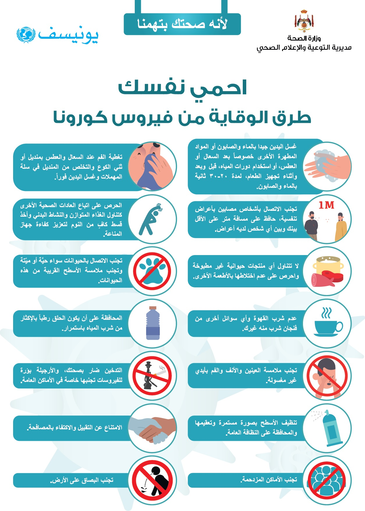

coronavirus
q
To help prevent the spread of COVID-19:
Wash your hands frequently. Use soap and water or an alcohol-based solution to sanitize your hands.
Keep a safe distance from anyone who is coughing or sneezing.
Wear a mask when physical distancing is not possible.
Do not touch your eyes, nose or mouth.
Cover your nose and mouth with your elbow or a tissue when coughing or sneezing.
Stay home if you feel sick.
Seek medical attention if you have a fever, cough and difficulty breathing.
Your health care provider should be contacted before proceeding so that they can quickly direct you to the appropriate care facility. This helps protect you and avoid the spread of viruses and other diseases.
gags
Masks can help prevent transmission of the virus from the person wearing the mask to others. However, masks do not alone protect against infection with Covid-19, but should also
Commitment to physical distancing and hand hygiene. Follow the directions given by your local health authorities.
